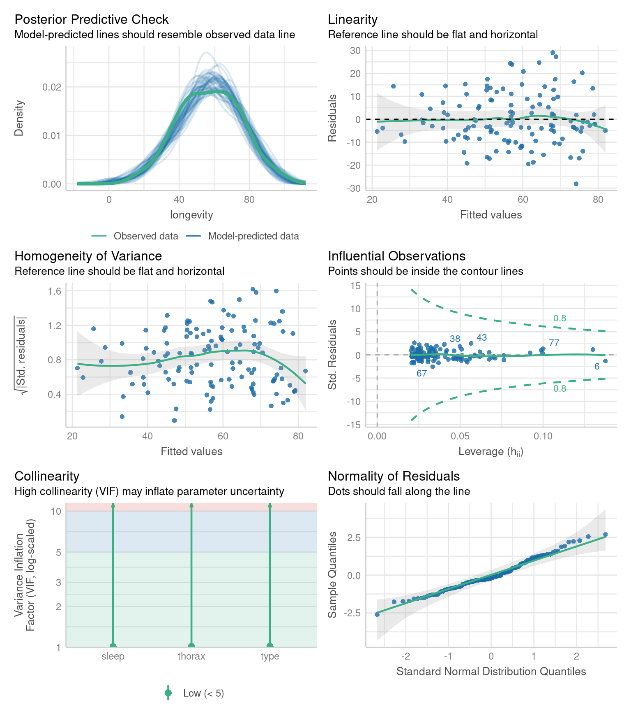

23 Causal models
23.1 The data
We are introduced to the fruitfly dataset (Partridge and Farquhar (1981))[https://nature.com/articles/294580a0]. From our understanding of sexual selection and reproductive biology in fruit flies, we know there is a well established ‘cost’ to reproduction in terms of reduced longevity for female fruitflies. The data from this experiment is designed to test whether increased sexual activity affects the lifespan of male fruitflies.
The flies used were an outbred stock, sexual activity was manipulated by supplying males with either new virgin females each day, previously mated females (Inseminated, so remating rates are lower), or provide no females at all (Control). For virgin and inseminated treatments, males were provided either a single female, or a group of females (8). All groups were otherwise treated identically.
partners: number of female companions(virgin = 1 or 8, inseminated = 1 or 8, control = 0)
type: type of female companion (virgin, inseminated, control(partners = 0))
longevity: lifespan in days
thorax: length of thorax in micrometres (a proxy for body size)
sleep: percentage of the day spent sleeping
What order will R organise the three type categories?
23.1.1 Questions
Think about causal relationships. Which variables might cause which others?
Write down some ideas:
Does mating status of the female affect male longevity (via changes in sexual activity)?
Does body size affect longevity directly?
Does body size affect longevity via change in mating activity?
Does sleep affect longevity?
Does female mating status or the number of females affect male sleep?
23.2 Checking the data
A quick intro to a general overview:
This is a full two-by-two plot of the entire dataset, but you should try and follow this up with some specific plots.

Your turn
- Make a Boxplot / Density distribution of longevity split by the female type with which males have been paired


23.3 The Causal Question
In this section, we explore how to construct a statistical model to analyse biological data. Specifically, we will build a linear model to examine our main question of whether female mating type affects male longevity in Drosophila melanogaster .
In order to do this we need to confirm our proposed relationships between variables - and produce our first use directed acyclic graphA diagram showing assumed causal relationships; arrows indicate cause, and loops are not allowed. (DAGs) to make better decisions about statistical modelling in biological research.
Your turn
Write out your proposed relationships:
These are not interaction effects these are proposals about which variables cause changes in the others
Mating status → sleep
Mating status → longevity
Mating status → Number of partners
Number of partners → sleep
Number of partners → longevity
Sleep → longevity
Thorax → longevity
Can you identify which of these are an outcomeThe variable affected by the exposure., exposureA variable we are interested in intervening on.?

23.3.1 What this shows:
Nodes = variables
Arrows = causal relationships
type = exposure
longevity = outcome
You can start recognising candidate mediators (sleep, partners) and possible confounders (thorax) visually.
23.3.2 Identifying colliders
Next it is important to whether any variables migh act as a potential colliderA variable influenced by two or more other variables; adjusting for it can create spurious associations..
A collider looks like this X → Z ← Y, where Z is the collider being influenced by both X and Y.
Conditioning on colliders opens non-causal paths and can create spurious associations. This is a common source of bias.
23.3.3 Identifying causal paths
This helps us identify all of the routes from exposure to outcome. Any variable on a path between the two can be considered a mediatorA variable on the causal path from exposure to outcome; it transmits part of the effect.
Variables that lie on a directed path and are downstream of the exposure are mediators, because they transmit part of the causal effect.
We could also look for whether any variable is a confounderA variable that affects both the exposure and the outcome, potentially creating a false association. - this would be any variable that causes changes to type and longevity.
Variables that appear on paths but are upstream of the exposure are not mediators; they are potential confounders.
Including a mediator will mean the “total effect” of the exposure cannot be estimated, only the “direct effect”.
Including a collider will bias the model as it opens a “non-causal” path.
23.3.4 Check adjustment sets
Here we can identify the variables that “must be conditioned on” in order to estimate the total causal effect on outcome.
In this DAG there are no adjustments required:
23.4 Building models
Using the lm() function in R, we fit a model to our cleaned dataset, and generate a summary of the results. This approach allows us to assess the significance of each predictor and interpret how these factors influence longevity. By the end of this section, you will understand how to structure a model, choose appropriate variables, and interpret statistical outputs.
If we want the direct and total effect of type we have seen that we do not need to include any other adjustment variables:
Our DAG also included body size (thorax) as a causal variable on longevity that is not part of the same causal paths as type. We can include this variable if we want to increase the variance explained, and precision of our estimates.
Call:
lm(formula = longevity ~ type, data = dros_clean)
Residuals:
Min 1Q Median 3Q Max
-31.74 -13.74 0.26 11.44 33.26
Coefficients:
Estimate Std. Error t value Pr(>|t|)
(Intercept) 63.560 3.158 20.130 < 2e-16 ***
typeInseminated 0.520 3.867 0.134 0.893
typeVirgin -15.820 3.867 -4.091 7.75e-05 ***
---
Signif. codes: 0 '***' 0.001 '**' 0.01 '*' 0.05 '.' 0.1 ' ' 1
Residual standard error: 15.79 on 122 degrees of freedom
Multiple R-squared: 0.2051, Adjusted R-squared: 0.1921
F-statistic: 15.74 on 2 and 122 DF, p-value: 8.305e-0723.5 Confidence intervals
When we produce a model fit - it is useful to think in terms of confidence intervals and estimate differences rather than just p-values.
A 95% confidence interval give us our confidence in having captured the true difference between groups at p = 0.05
| term | estimate | std.error | statistic | p.value | conf.low | conf.high |
|---|---|---|---|---|---|---|
| (Intercept) | 63.56 | 3.157477 | 20.1299982 | 0.0000000 | 57.309460 | 69.810541 |
| typeInseminated | 0.52 | 3.867103 | 0.1344676 | 0.8932544 | -7.135317 | 8.175317 |
| typeVirgin | -15.82 | 3.867103 | -4.0909173 | 0.0000775 | -23.475317 | -8.164683 |
| Term | Estimate | 95% CI | Interpretation |
|---|---|---|---|
| (Intercept) | 63.6 | (57.3, 69.8) | Baseline longevity — flies in the reference group (mated males) live about 64 days on average. We are 95% confident the true mean lies between 57 and 70 days. |
| typeInseminated | 0.52 | (−7.1, 8.2) | Flies with inseminated partners live about 0.5 days longer than the reference group, but the 95% CI spans both negative and positive values — from −7 to +8 days — indicating no clear difference. |
| typeVirgin | −15.8 | (−23.5, −8.2) | Flies paired with virgin partners live roughly 16 days shorter on average. The 95% CI (−23.5 to −8.2) does not include zero, within our confidence intervals we know that the true difference is at least 8.2 days |
23.6 Precison model
In a basic linear model, we often start by comparing group means — for example:
\[ \text{longevity}_i = \beta_0 + \beta_1 \, \text{type}_i + \varepsilon_i \]
This model assumes that differences in longevity are entirely due to type (e.g., mating partner).
But in real data, other variables may also influence the outcome — for example, body size might affect how long flies live.
If mean body size happens to vary slightly between groups, failing to include it could confound our estimate of the effect of type.
By adding it as a covariate, we adjust for this additional source of variation:
\[ \text{longevity}_i = \beta_0 + \beta_1 \, \text{type}_i + \beta_2 \, \text{thorax}_i + \varepsilon_i \]
23.6.1 Interpretation
The coefficient 𝛽1 represents the effect of mating type, after adjusting for body size.
The coefficient 𝛽2 represents how longevity changes with body size, holding type constant.
Including covariates often reduces residual variation and improves model fit.
Your turn
Call:
lm(formula = longevity ~ type + thorax, data = dros_clean)
Residuals:
Min 1Q Median 3Q Max
-27.330 -6.803 -2.531 7.143 29.415
Coefficients:
Estimate Std. Error t value Pr(>|t|)
(Intercept) -56.521 11.149 -5.069 1.45e-06 ***
typeInseminated 3.450 2.759 1.250 0.214
typeVirgin -13.349 2.756 -4.845 3.80e-06 ***
thorax 143.638 13.064 10.995 < 2e-16 ***
---
Signif. codes: 0 '***' 0.001 '**' 0.01 '*' 0.05 '.' 0.1 ' ' 1
Residual standard error: 11.21 on 121 degrees of freedom
Multiple R-squared: 0.6024, Adjusted R-squared: 0.5925
F-statistic: 61.1 on 3 and 121 DF, p-value: < 2.2e-16When we use continuous predictors, the intercept becomes the expected value of our outcome (longevity), when all predictors are 0. This can make the intercept an unrealistic value.
One way around this is to “center” the continuous predictors - so that 0 now becomes the mean value of the predictor
Call:
lm(formula = longevity ~ type + thorax_c, data = dros_clean)
Residuals:
Min 1Q Median 3Q Max
-27.330 -6.803 -2.531 7.143 29.415
Coefficients:
Estimate Std. Error t value Pr(>|t|)
(Intercept) 61.400 2.251 27.277 < 2e-16 ***
typeInseminated 3.450 2.759 1.250 0.214
typeVirgin -13.349 2.756 -4.845 3.8e-06 ***
thorax_c 143.638 13.064 10.995 < 2e-16 ***
---
Signif. codes: 0 '***' 0.001 '**' 0.01 '*' 0.05 '.' 0.1 ' ' 1
Residual standard error: 11.21 on 121 degrees of freedom
Multiple R-squared: 0.6024, Adjusted R-squared: 0.5925
F-statistic: 61.1 on 3 and 121 DF, p-value: < 2.2e-1623.7 Compare the models
Compare to the simpler model:
| Res.Df | RSS | Df | Sum of Sq | F | Pr(>F) |
|---|---|---|---|---|---|
| 122 | 30407.46 | NA | NA | NA | NA |
| 121 | 15210.85 | 1 | 15196.61 | 120.8868 | 0 |
The ANOVA tests whether adding body_size significantly improves the model.
23.8 Causal DAG and ggdag Checklist
23.8.0.1 1. Define the causal question
- Clearly specify the exposure and outcome
- State the causal estimand:
- Total effect, or
- Direct effect (and through which pathways)
23.8.0.2 2. Draw and inspect the DAG
- Encode substantive causal assumptions as arrows
- Ensure arrow directions reflect causal ordering, not statistical association
- Check that all relevant common causes are represented
23.8.0.3 3. Identify causal paths
- Examine directed paths from exposure to outcome
- Classify variables by their position relative to the exposure:
- Downstream of exposure → candidate mediators
- Upstream of exposure → candidate confounders
- Remember: being on a path is necessary but not sufficient for mediation
23.8.0.4 4. Identify colliders
- Locate nodes where arrows meet head-to-head (
X → Z ← Y) - Do not condition on colliders, including outcome colliders
23.8.0.5 5. Check for confounding
- Use
adjustmentSets()to identify sufficient adjustment sets - Confirm whether confounding exists for the chosen estimand
- Note: adjustment sets indicate how to adjust, not which variables are confounders
23.8.0.6 6. Decide what to include in the model
- Include confounders (if present) to remove bias
- Exclude mediators when estimating total effects
- Include mediators only when estimating direct effects, with assumptions stated
- Exclude colliders
- Variables that affect only the outcome may be included for precision, not bias control
23.8.0.7 7. Fit and interpret the model
- Fit the statistical model consistent with the estimand
- Interpret coefficients only with respect to the causal question posed
- Avoid interpreting “adjusted” coefficients as causal without DAG justification
23.8.0.8 Core principle
Draw the DAG → identify paths → classify variables → choose the estimand → then model.